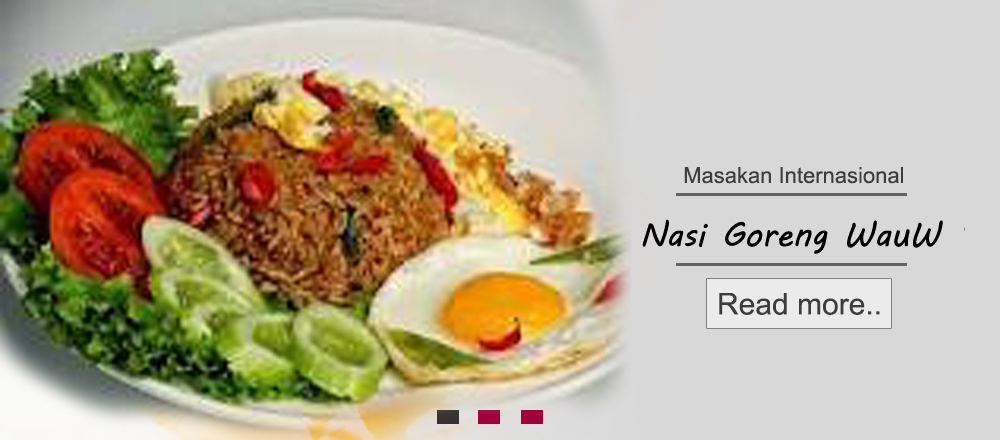
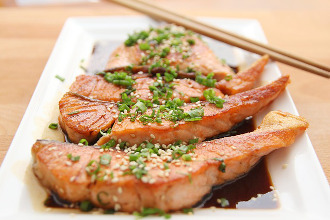
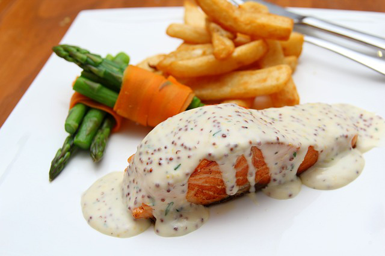
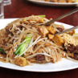
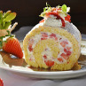
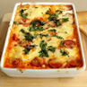
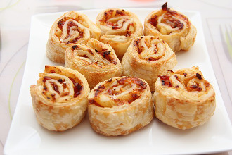
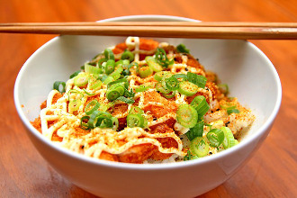

Kumpulan berbagai resep makanan

Resep Terbaru

Salmon dimasak dengan kecap toriyaki yang nikmat. Cocok disajikan pada malam hari
Read more...

Salmon seeded mustard cocok sekali untuk dinner. Rasanya nikmat dan lezat
Read more...

Thai food noodle fried noodles moa bercampur dengan toge, tahu dan daging sapi.

Kue terbuat dari campuran strawberry cocok untuk dessert

Food spanish baked eggs bercampur dengan irisan sosis goreng yang nikmat

Pizza roll baked mini dibuat dengan bumbu - bumbu pizza yang sering dibuat restoran
Read more...

Mie Japanese dengan gurih berpadu dengan daun bawang yang nikmat.
Read more...
20
Jan
Sup daging lobak
Santap siang atau malam terasa kurang lengkap bila tidak ada sup
Santap siang atau malam terasa kurang lengkap bila tidak ada sup
12
Feb
Bandeng presto bumbu cabai
Hidangan yang satu ini tak bisa diragukan lagi kelezatan dan kenikmatannya
Hidangan yang satu ini tak bisa diragukan lagi kelezatan dan kenikmatannya
04
Ags
Udang masak kolio
Mari kita buat udang masak kolio yang cocok disantap pada siang hari dan malam hari
Mari kita buat udang masak kolio yang cocok disantap pada siang hari dan malam hari
Copyright © 2016. All Rights Reserved.
Powered By Soeharto
Powered By Soeharto